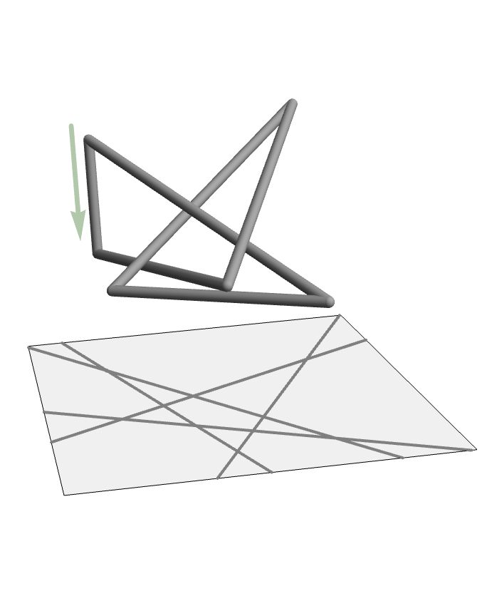
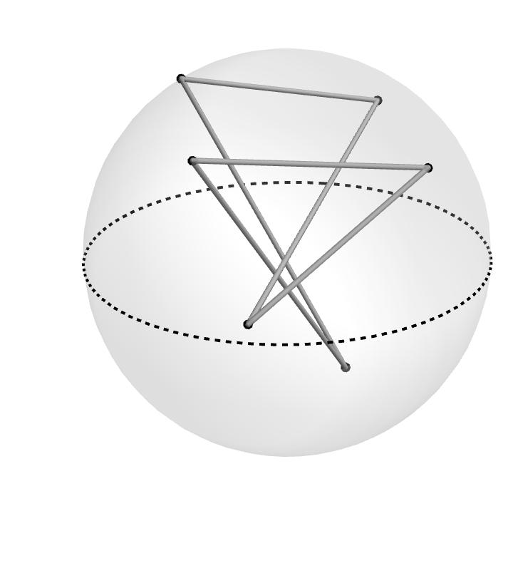

← Back to the math research page
My current research involves knot theory - the study of loops in 3D space. In particular I am interested in stick knots (also called piecewise linear knots) and random knot models, methods of randomly sampling knots.

